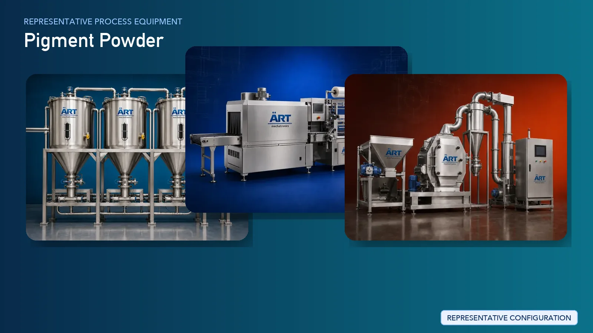

Pigment Powder Manufacturing Plant & Machinery Solutions (Color Pigment Production Systems)
Pigment manufacturing is a critical segment in the chemical industry, producing color pigments used in paints, inks, plastics, coatings, cosmetics, and construction materials. Pigments provide color, opacity, durability, and UV resistance, making them essential across multiple industries.

About Pigment Powder processing
The manufacturing process requires precise chemical reactions, controlled particle size reduction, uniform dispersion, and high purity levels to achieve consistent color strength and performance.
ART Mechatronics provides complete turnkey solutions for pigment powder manufacturing plants, offering advanced systems for reaction, filtration, drying, grinding, micronizing, blending, and packaging. Our solutions are designed for high-quality pigment production, uniform particle size, and scalable industrial operations.
Complete Pigment Process Flow
Chemical raw materials, intermediates, and additives are received and measured.
Ensures accurate formulation.
Pigments are produced through chemical reactions.
Produces pigment slurry.
Solid pigment is separated from liquid phase.
Ensures purity of pigment material.
Pigment cake is washed to remove impurities.
Moisture is removed from pigment material.
Produces dry pigment material.
- Fine particle size
- Uniform dispersion
Ultra-fine grinding for high-quality pigments.
Produces:
- Nano or micro-size particles
Particles are classified based on size.
Pigments are tested for:
- Industrial bulk supply
Types of Pigments Produced
- Organic Pigments
- Inorganic Pigments
- Iron Oxide Pigments
- Titanium Dioxide (TiO₂)
- Color Pigments for Paints
- Pigments for Plastics & Masterbatch
- Cosmetic Grade Pigments
Machinery Required for Pigment Plant
- Storage Tanks / Silos
- Dosing System
- Chemical Reactor
- Filter Press / Centrifuge
- Washing System
- Dryers (Spray / Tray / Rotary)
- Ball Mill / Jet Mill / Pulverizer
- Micronizer
- Ribbon Blender
- Vibro Sifter
- Packaging Machines
Turnkey Pigment Plant Solutions
ART Mechatronics offers complete turnkey solutions for pigment manufacturing plants, including:
- Process design & plant layout
- Reaction and separation systems
- Drying and grinding systems
- Micronizing and classification systems
- Automation & control panels
- Installation & commissioning
- After-sales support
We customize solutions based on:
- Pigment type
- Production capacity
- Required particle size
- Automation level
Why Choose Art Mechatronics
- Expertise in chemical and pigment processing systems
- Advanced grinding and micronizing technology
- High precision particle size control
- Consistent color quality
- Energy-efficient plant design
- Global export capability
Machinery in a Pigment Powder plant
Where it's used
Get pricing & specs for the Pigment Powder plant
Share the product, target capacity, current process and plant location. These details help our engineers discuss the right machine or line configuration.
One partner, from design to start-up
ART Mechatronics designs, manufactures, installs and commissions your Pigment Powder solution with regional presence in India, UAE and Thailand.